Atlas de la pérdida forestal · ParaguayHansen GFC 2025 · v1.13
El Chaco perdió un tercio de su bosque en 25 años
Entre 2001 y 2025, Boquerón, Alto Paraguay y Presidente Hayes
perdieron el 35,7 % de la cobertura forestal que tenían al
comienzo del período. La mayor parte de esa pérdida se
concentra en Boquerón y Alto Paraguay. Boquerón perdió
aproximadamente 3,25 millones de hectáreas, equivalentes al
45,9 % de su cobertura forestal de referencia. Alto Paraguay
perdió otras 2,17 millones de hectáreas, el 31,5 %. En
conjunto, ambos departamentos concentran alrededor de dos
tercios de la pérdida registrada en el país bajo este
criterio: 5,41 millones de hectáreas, el 65,3 % del desmonte
de todo el país.
Autor
Guillermo Cabrera · Periodismo de datos
Fuente
Hansen Global Forest Change 2025 v1.13
Periodo
2001–2025 · Boquerón y Alto Paraguay
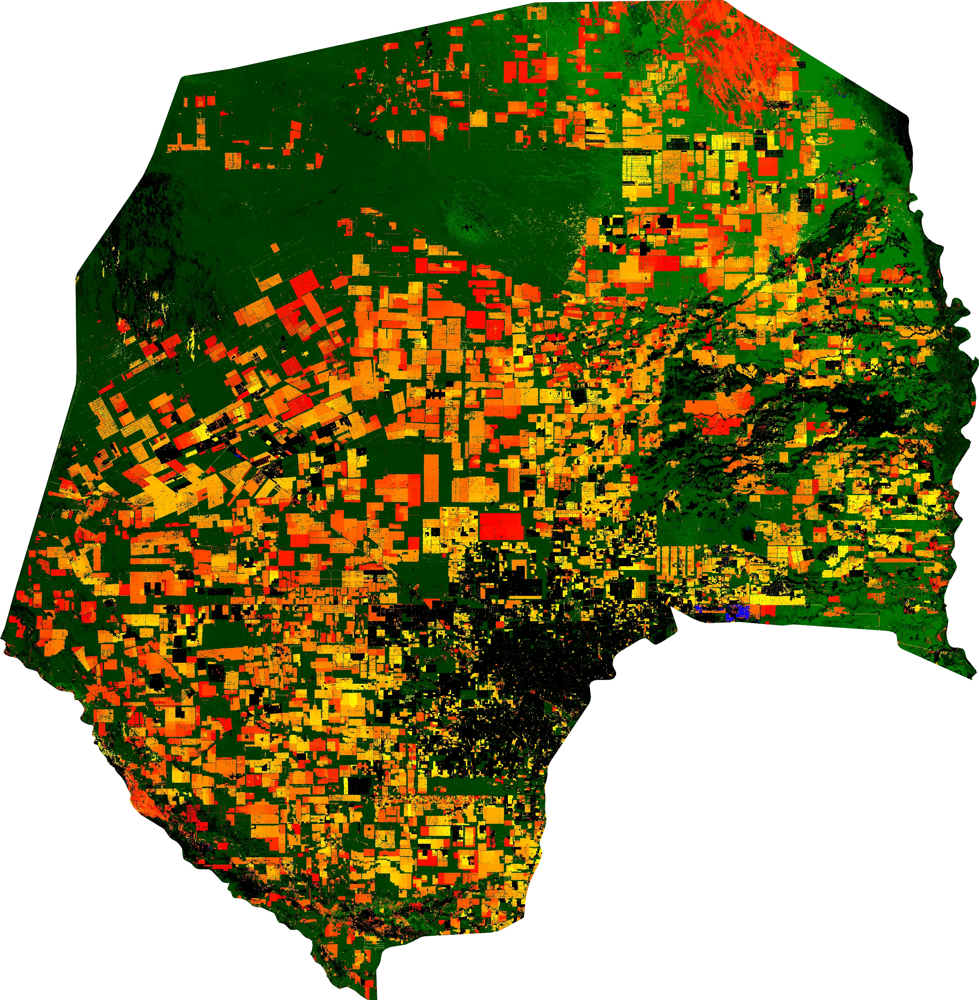
Placa 01 · evidenciaAÑO 2025 · acumulado
Estos números provienen de Hansen Global Forest Change 2025
v1.13, procesado mediante Google Earth Engine. La serie permite
observar la pérdida de cobertura arbórea año por año desde 2001,
y este atlas la aplica a Boquerón y
Alto Paraguay.
Pero hay una condición importante antes de interpretar cualquier
mapa. La serie parte de la cobertura existente en el año 2000: un
píxel entra en el cálculo cuando tenía al menos 30 % de cobertura
de copa en ese año. Por lo tanto, una superficie que ya había sido
desmontada antes de 2001 no aparece como pérdida en esta serie.
Tampoco lo hace una formación vegetal que nunca alcanzó ese
umbral.
Lo que se observa aquí es, por tanto, la pérdida de cobertura
arbórea detectada por Hansen a partir de una línea de base
determinada. No es una reconstrucción completa de toda la
transformación del territorio chaqueño.
Una forma de entender la magnitud del cambio es mantener fija la
escala y comparar distintos momentos de la serie:
2002, 2010 y
2025.
La serie temporal: tres lecturas del mismo territorio
Punto 01 de 03 · 2002
2002: la línea de base ya no era virgen
En el corte del año 2002 la
pérdida registrada todavía ocupaba una superficie pequeña
en relación con el área total analizada. Ya existían, sin
embargo, numerosos sectores sin cobertura arbórea. Algunos
correspondían a superficies naturales que no entraban en la
definición de bosque utilizada por Hansen; otros
reflejaban transformaciones anteriores al inicio de la
serie.
Los primeros píxeles de pérdida aparecen distribuidos en
diferentes sectores del territorio.
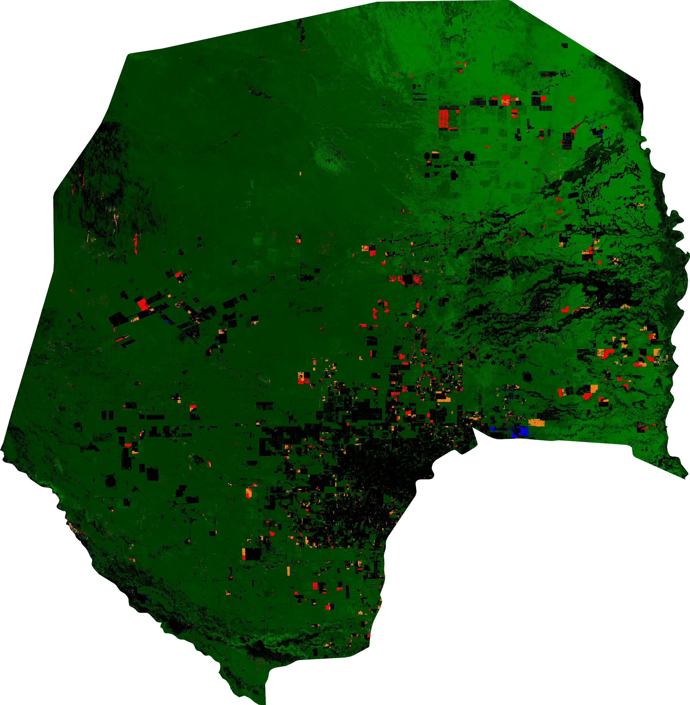
Año 2002 · Alto Paraguay + Boquerón
Punto 02 de 03 · 2010
2010: los bloques se conectan
Para 2010, el patrón había cambiado. Las nuevas áreas de
pérdida aparecían con mayor frecuencia junto a superficies
que ya habían sido transformadas. Los bloques comenzaron
a conectarse y a formar franjas continuas.
La geometría es especialmente visible en el Chaco. Los
desmontes asociados a la transformación productiva del
territorio suelen presentar límites rectos y formas
regulares, mientras que las franjas de vegetación
remanente permanecen entre las áreas intervenidas.
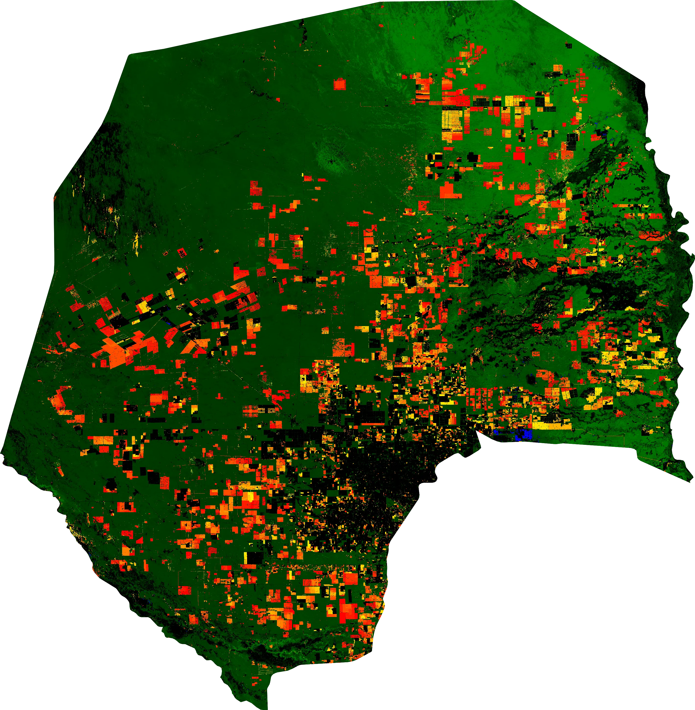
Año 2010 · Alto Paraguay + Boquerón
Punto 03 de 03 · 2025
2025: 25 años acumulados en un solo encuadre
En el año 2025 la acumulación de
25 años de pérdida modifica por completo la imagen
inicial. En Boquerón y Alto Paraguay, la cobertura forestal
que existía en 2000 había disminuido en 38,8 % bajo el
cálculo utilizado para esta visualización. En la imagen, la
marca de pérdida ocupa cerca de una quinta parte del
encuadre.
La comparación no pretende mostrar solamente cuánto bosque
desapareció. También permite observar cómo se fue
distribuyendo espacialmente la pérdida.
Año 2025 · Alto Paraguay + Boquerón
Año 2002 · Alto Paraguay + Boquerón
2002 · 2010 · 2025
La superficie importa, pero el porcentaje también
El tamaño absoluto de un departamento condiciona la cantidad de
hectáreas que puede perder. En términos absolutos,
Boquerón registra una pérdida mayor.
Boquerón, por ejemplo, tenía alrededor de 7,07 millones de
hectáreas de cobertura forestal de referencia en 2000.
Alto Paraguay tenía 6,86 millones. La pérdida
acumulada fue de 3,25 millones y 2,17 millones de hectáreas,
respectivamente. Pero cuando se utiliza el porcentaje de la
cobertura inicial, la comparación cambia: Boquerón perdió el
45,9 % de su cobertura de referencia, mientras que Alto Paraguay
perdió el 31,5 %.
Por eso el atlas muestra ambas medidas. Las hectáreas permiten
medir la magnitud territorial del fenómeno; el porcentaje permite
comparar la intensidad relativa entre departamentos con tamaños
diferentes. La Región Oriental también aparece con porcentajes
elevados bajo esta misma definición:
San Pedro y Canindeyú, por
ejemplo, registran pérdidas relativas cercanas al 43 %. El mapa,
por tanto, no debe leerse como un ranking de “los departamentos
más deforestados” sin especificar primero qué se está midiendo.
Placa 02 · Dos territoriosBoquerón / Alto Paraguay · recorte por departamento de la misma capa
Boquerón y Alto Paraguay, lado a lado
Los dos departamentos parten de superficies forestales similares,
pero la evolución anual no fue igual. El patrón temporal es
diferente incluso cuando los dos departamentos forman parte del
mismo proceso regional.
Boquerón alcanzó su mayor pérdida anual en 2012, con
aproximadamente 243.141 hectáreas. Alto Paraguay tuvo su máximo en
2010, con 156.092 hectáreas. En Alto Paraguay aparece además un
aumento importante en 2019: unas 176.042 hectáreas, casi tres
veces el valor registrado en 2018. Estas cifras corresponden al
procesamiento propio de la serie Hansen utilizado en el atlas.
Boquerón
Pérdida acumulada: 3.245.165 ha entre 2001 y 2025 · 45,9 % de
su cobertura forestal de referencia · mayor pérdida anual en
2012 (243.141 ha)
Alto Paraguay
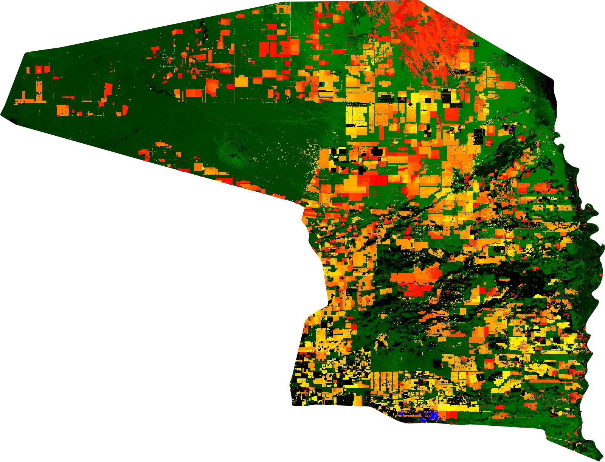
Pérdida acumulada: 2.165.089 ha entre 2001 y 2025 · 31,5 % de
su cobertura forestal de referencia · mayor pérdida anual en
2010 (156.092 ha)
Placa 03 · Pérdida y emisionesSeries anuales · 2001–2025
En Boquerón, Global Forest Watch registra aproximadamente 2,93 millones de hectáreas de pérdida entre 2001 y 2025 —el 41,5 % de su cobertura de referencia—, frente a 3,25 millones en la agregación utilizada por este atlas. Su máximo es 2012, con 227.485 hectáreas en doce meses. Para ese mismo departamento, Global Forest Watch estima alrededor de 525 Mt de CO₂e brutas.
La pérdida de cobertura arbórea y la pérdida de bosque primario no representan exactamente lo mismo. Dentro de la extensión clasificada como bosque primario húmedo en 2001, Boquerón perdió 7.527 hectáreas durante el período analizado: el 0,26 % de su pérdida total de cobertura arbórea, frente a 2,93 millones de hectáreas en el mismo periodo. En Boquerón los valores más altos aparecen más tarde, especialmente en 2016 y 2018. Esto muestra por qué una única cifra de “deforestación” puede ocultar procesos diferentes.
Pérdida dentro de la extensión de bosque primario de 2001 · años rotulados: ’01 · ’06 · ’11 · ’16 · ’21 · ’25
Misma advertencia metodológica que arriba: el método cambió en 2015. Más información aquí.
Bosque primario de 2001 · dosel arbóreo >30 % · sin descontar ganancia
En Alto Paraguay, las cifras son aproximadamente 1,93 millones de hectáreas en la serie publicada —el 28,2 % de su cobertura de referencia— y 2,17 millones (31,5 %) en la agregación de este atlas, respectivamente. La serie publicada sitúa el año más alto en 2010, con 156.092 hectáreas, y estima unas 487 Mt de CO₂e brutas.
La pérdida total de cobertura arbórea incluye superficies mucho más amplias que las consideradas bosque primario húmedo. En Alto Paraguay la cifra llegó a 347.276 hectáreas —el 18,0 % de toda su pérdida de cobertura arbórea— y es el 98 % de lo perdido en bosque primario húmedo en los dos departamentos: Boquerón aporta 7.527 hectáreas. Esa pérdida se concentra principalmente entre 2002 y 2016, con máximos en 2012 (35.139 ha) y 2003 (32.680 ha).
Pérdida dentro de la extensión de bosque primario de 2001 · años rotulados: ’01 · ’06 · ’11 · ’16 · ’21 · ’25
Misma advertencia metodológica que arriba: el método cambió en 2015. Más información aquí.
Bosque primario de 2001 · dosel arbóreo >30 % · sin descontar ganancia
Dos denominadores, un mismo territorio. Los
gráficos de pérdida anual y emisiones de esta placa utilizan la
serie publicada por Global Forest Watch; el mapa, el ranking, la
leyenda y el archivo descargable utilizan la agregación realizada
específicamente para este proyecto, que rinde entre 9 % y 11 %
más en estos dos departamentos. Eso produce dos cifras
diferentes para un mismo territorio. La diferencia no significa
que uno de los resultados sea necesariamente incorrecto: los dos
cálculos utilizan la misma familia de datos, pero aplican
procedimientos de agregación diferentes. Por esa razón no se
mezclan las cifras dentro de un mismo cálculo. Las emisiones de
CO₂ equivalente, en cambio, se presentan como emisiones brutas
asociadas a la pérdida estimada, no como un balance neto de
carbono del territorio.
Placa 04 · MapBiomas ParaguayColección 2 · cobertura y uso del suelo · 1985–2023
Portada · MapBiomas Paraguay
La serie larga: qué había antes de Hansen
Los mapas anuales de MapBiomas Paraguay (Colección 2) comienzan en
1985, quince años antes de la línea de base de Hansen, y aportan la
pieza que la serie de pérdida anual no puede dar: el tramo anterior a
2000. Bajo una misma definición de vegetación arbórea natural, el Chaco
tenía en 1985 alrededor de 23,10 millones de hectáreas y en 2023 registra
17,44 millones: una pérdida acumulada de 5.657.913 hectáreas, el 24,5 %.
El dato decisivo es temporal. Entre 1985 y 2000, antes de que Hansen
empezara a medir, el Chaco ya había perdido 966.959 hectáreas (4,19 %) y
la Región Oriental 1.864.182 hectáreas (28,8 %). En paralelo, la
superficie antrópica del Chaco pasó de 758.911 a 6.384.138 hectáreas:
casi toda pastura.
Vegetación arbórea natural, 1985–2023
LÍNEAS · MILLONES DE HECTÁREAS · CHACO, REGIÓN ORIENTAL Y PARAGUAY
Figura 1. Vegetación arbórea natural (MapBiomas Paraguay, Colección 2: clases 1.1 + 1.2 + 1.3) en millones de hectáreas. La franja marca el tramo anterior a 2000, estructuralmente invisible para la serie Hansen. Fuente: elaboración propia sobre Statistics-Paraguay-Col2-V1.xlsx.
Áreas antrópicas del Chaco, 1985–2023
ÁREAS APILADAS · MILLONES DE HECTÁREAS · PASTURA, AGRICULTURA Y PLANTACIÓN FORESTAL
Figura 2. Áreas antrópicas de la Región Occidental (Chaco) en millones de hectáreas. La conversión es, por amplio margen, un proceso de ganaderización, con un componente agrícola que crece desde 2015. Fuente: elaboración propia.
Vegetación arbórea natural según MapBiomas Paraguay (Colección 2:
1.1 + 1.2 + 1.3), en hectáreas
Unidad territorial
1985
2000
2023
Pérdida 1985–2023
%
Pérdida 2000–2023
%
Pre-2001 (1985–2000)
%
Chaco (Región Occidental)
23.096.820
22.129.861
17.438.907
5.657.913
24,5 %
4.690.954
21,2 %
966.959
4,19 %
Boquerón
8.362.836
7.894.920
5.221.734
3.141.102
37,6 %
2.673.186
33,9 %
467.916
5,60 %
Alto Paraguay
7.780.139
7.579.557
6.042.262
1.737.877
22,3 %
1.537.295
20,3 %
200.582
2,58 %
Presidente Hayes
6.953.383
6.654.923
6.174.450
778.933
11,2 %
480.473
7,2 %
298.460
4,29 %
Región Oriental
6.469.596
4.605.414
3.436.799
3.032.797
46,9 %
1.168.615
25,4 %
1.864.182
28,8 %
Paraguay
29.566.415
26.735.274
20.875.705
8.690.710
29,4 %
5.859.569
21,9 %
2.831.141
9,6 %
Placa 05 · Explorador territorial17 departamentos + Asunción · selección por clic o teclado
Paraguay, departamento por departamento
El explorador territorial extiende el mismo cálculo a los
departamentos del país y a Asunción. Cada unidad está representada
según el porcentaje de su cobertura forestal de referencia que se
perdió desde 2001, y el usuario puede cambiar de departamento para
consultar tanto la superficie inicial como la pérdida acumulada.
La intención es mantener dos preguntas separadas: ¿cuántas
hectáreas se perdieron? ¿Qué proporción de la cobertura inicial
representa esa pérdida? La diferencia parece pequeña, pero cambia
la interpretación del mapa.
Los datos utilizados en el proyecto fueron procesados
previamente en Google Earth Engine y almacenados localmente.
El sitio no consulta la base de datos en tiempo real. La fuente
principal es Hansen Global Forest Change 2025 v1.13, y el
procesamiento propio, realizado mediante un pipeline específico,
produjo los archivos utilizados para los mapas y las
estadísticas del sitio.
Hay tres límites que deben acompañar cualquier lectura de los
resultados. Primero, Hansen identifica pérdida de cobertura
arbórea: por sí solo no permite determinar la propiedad de una
parcela, su uso productivo ni la causa exacta del cambio
observado. Una pérdida puede estar asociada a desmonte,
incendio, mortalidad del dosel u otros procesos.
Segundo, la serie parte de una cobertura forestal definida para
el año 2000, de modo que la vegetación que estaba por debajo del
umbral del 30 % y las superficies transformadas antes de 2001
no forman parte de la pérdida acumulada. Tercero, el cálculo
realizado para este proyecto y la agregación publicada por
Global Forest Watch presentan diferencias de aproximadamente
9–11 % en Boquerón y Alto Paraguay; las cifras se mantienen
separadas precisamente para evitar mezclar metodologías.
El resultado es un atlas de cambio de cobertura, no un
inventario completo de transformación territorial.
Placa 07 · Un informe complementarioPlanet AI · publicado 2026-09-05 · Hansen v1.11 · Landsat 8/9 · CHIRPS · PlanetScope
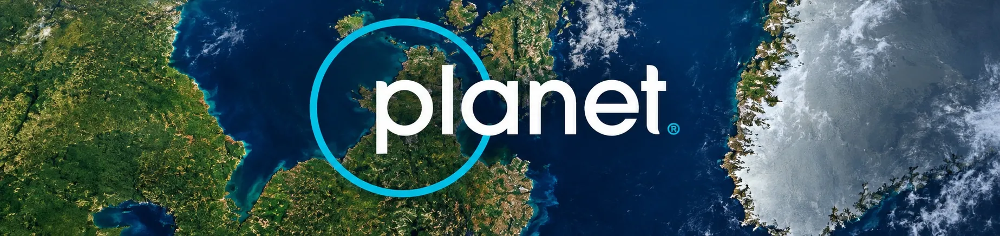
Portada · informe Planet
Un informe complementario, con sus propios límites
El proyecto incorpora además un análisis generado por la
herramienta de inteligencia artificial de Planet Labs y publicado
en septiembre de 2026. Es importante tratarlo como una fuente
diferente: sus resultados se presentan aquí como análisis
complementario y no como sustitución de la serie principal.
El informe analiza un área de aproximadamente 171.263 km² y
combina Hansen, imágenes Landsat, datos de precipitación CHIRPS
y verificaciones puntuales con PlanetScope. Aunque el área
incluye pequeñas porciones de Argentina, Bolivia y Brasil, el
98,1 % del área analizada está en Paraguay
(168.060 km²). En la práctica, el documento es una radiografía
de Boquerón, Presidente Hayes y Alto Paraguay.
El informe utiliza Hansen v1.11 y llega hasta
2023 para el cálculo de pérdida anual. Sus observaciones de
2024–2026 utilizan otras fuentes y no representan una
continuación directa de la serie de hectáreas de Hansen. Cada
figura que sigue es una figura original del
informe, reproducida como anexo documental.
Conviene separar dos capas del documento. Los números
—hectáreas, porcentajes, años— provienen de las fuentes
citadas y son contrastables contra ellas. Las lecturas —qué
significa un par de imágenes, cuánto pesa la sequía frente al
desmonte, qué conclusión deja una celda aislada— son del
sistema que redactó el informe. En cada figura se indica cuál
de las dos cosas se está leyendo.
Área de interés (AOI)
171.263 km² · 98,1 % PY
Bosque del 2000 perdido al 2023
32,7 % · 46.282 km²
Ritmo medio 2017–2023 (subárea PY)
≈ 1.780 km² / año
Nota de fidelidad. Las cifras propias de este
sitio salen de Hansen GFC v1.13 (serie 2001–2025,
exportada por hansen_export_pipeline.py). El informe
adjunto usa Hansen v1.11, cuya contabilidad de
pérdida llega hasta 2023; sus lecturas de 2024 a 2026 se apoyan
en Landsat y PlanetScope, no en un conteo de hectáreas. Son tres
agregaciones de la misma familia de datos —proyecto, Global
Forest Watch e informe—, con ventanas temporales y criterios
distintos, y ninguna reemplaza a las otras.
Placa 08 · La pérdida no se detuvoSerie Hansen acumulada · 2016–2023
Ocho años, ninguna reversión
Entre 2016 y 2023 —el último tramo con conteo de hectáreas del
informe— el área analizada perdió aproximadamente
12.484 km² de cobertura forestal según la serie
utilizada por el informe. La pérdida anual osciló aproximadamente
entre 1.300 y 2.600 km². No aparece un período sostenido de
recuperación dentro de esa ventana.
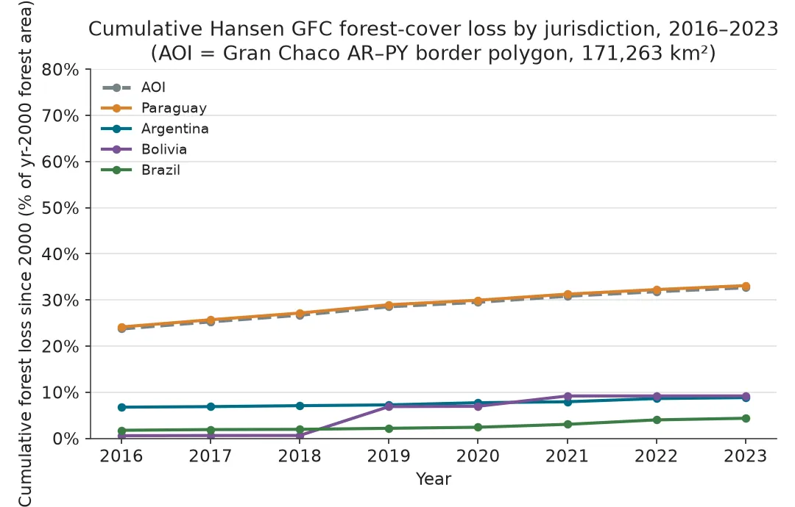
Figura 1 · informe Planet
Pérdida acumulada (% del bosque del año 2000) por
jurisdicción, 2016–2023. El salto de Bolivia entre 2018 y
2019 coincide con la temporada de incendios de la
Chiquitania, corroborada visualmente por el informe.
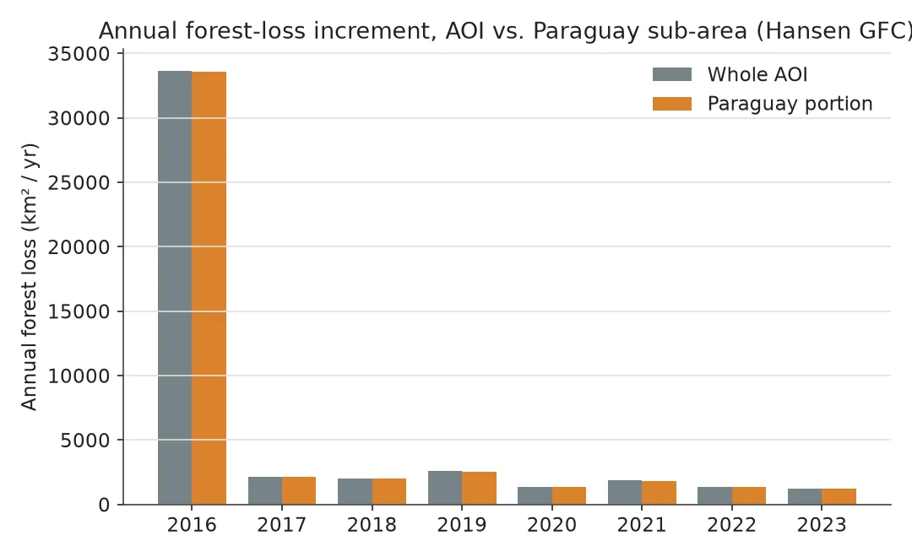
Figura 2 · informe Planet
Incremento anual de pérdida (km²/año), AOI vs. subárea de
Paraguay. Promedio 2017–2023: ≈ 1.780 km²/año
(12.484 km² en siete años).
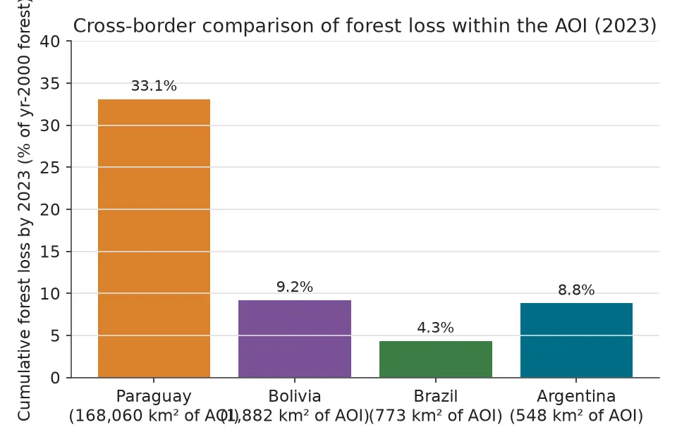
Figura 3 · informe Planet
Paraguay 33,1 % · Bolivia 9,2 % · Argentina 8,8 % ·
Brasil 4,3 %. Advertencia del informe: las franjas
argentino, boliviano y brasileño miden 0,3–1,1 % del AOI;
es una muestra puntual, no una comparación nacional.
Lectura. El informe no cierra la serie:
propone usar las celdas de bosque conservado que bordean el
corredor de focos (Placa 09) como indicador temprano, en lugar
de medir solo lo que ya se desmontó.
Placa 09 · Dónde golpea la fronteraCeldas de 0,25° · ≈ 27 × 27 km · 263 celdas relevadas
Un corredor de focos, no un desmonte disperso
Al observar la distribución espacial, además, la pérdida no
aparece repartida de manera uniforme. Una parte importante se
concentra en un corredor que atraviesa sectores de
Boquerón y Presidente Hayes.
Algunas celdas de aproximadamente 27 × 27 km perdieron entre el
60 % y el 71 % de la cobertura que tenían en 2000. En cambio,
alrededor de áreas protegidas como Defensores del Chaco y Médanos
del Chaco, las pérdidas observadas son mucho menores. La
comparación no demuestra por sí sola una relación causal entre
protección y menor pérdida, pero sí muestra una diferencia
espacial clara entre las áreas analizadas.
Foco verificado (60–71 % perdido) Control protegido (Defensores del Chaco) Verificación transfronteriza Celda con discrepancia
Pasá el cursor o recorré los puntos con Tab para ver sus datos.
Las cinco celdas más afectadas al 2023 (todas > 400 km² de
bosque 2000, todas en Paraguay)
Centro de celda
Bosque año 2000
Pérdida al 2023
% perdido
21,025° S · 60,175° O
708 km²
506 km²
71,5 %
20,775° S · 60,675° O
714 km²
500 km²
70,0 %
21,275° S · 59,675° O
627 km²
407 km²
64,9 %
22,525° S · 60,925° O
657 km²
420 km²
63,9 %
21,775° S · 60,425° O
602 km²
385 km²
63,9 %
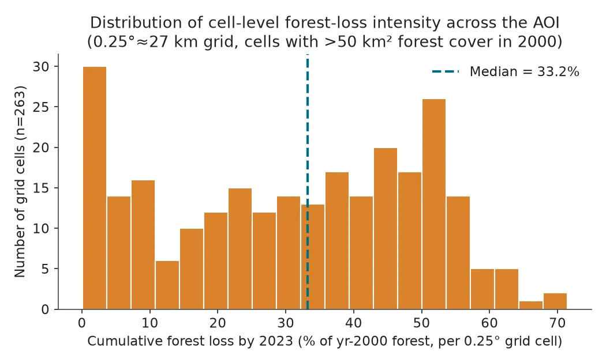
Figura 6 · informe Planet
Intensidad de pérdida por celda (n = 263). Mediana 33,2 %,
media 30,9 %: los extremos mueven el promedio, por eso
la mediana describe mejor la celda típica.
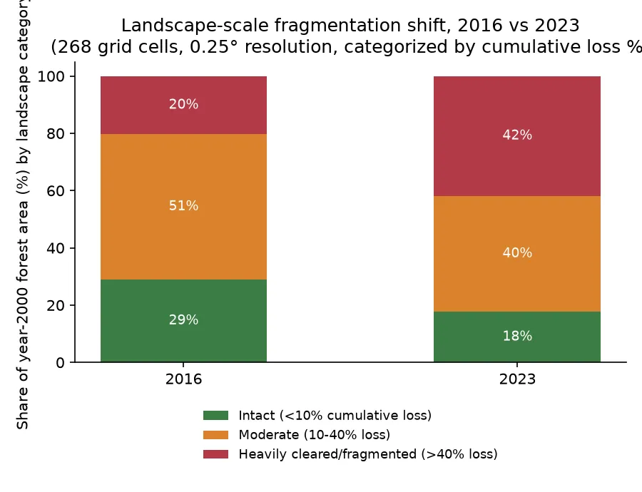
Figura 9 · informe Planet
En siete años, la porción del bosque original en celdas
fuertemente fragmentadas pasó del 20,2 % al 41,9 %, y la
de celdas intactas cayó del 29,0 % al 17,7 %.
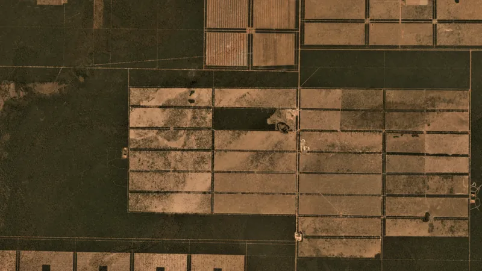
Foco A · 21,025° S 60,175° O — ago 2017
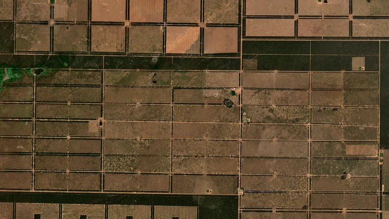
Foco A · mismo sitio — ago 2026
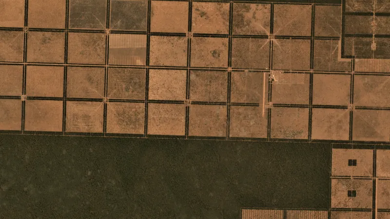
Foco B · 20,775° S 60,675° O — ago 2017
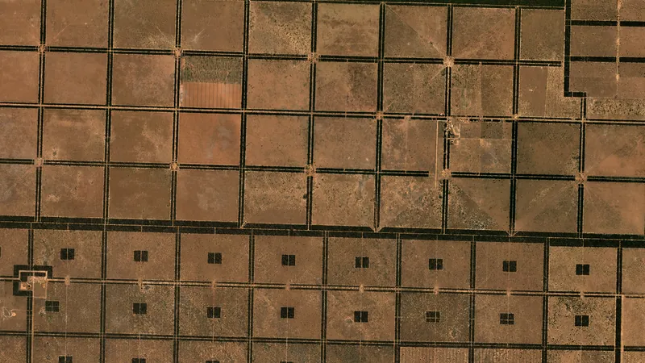
Foco B · mismo sitio — ago 2024
Las imágenes de alta resolución muestran otra escala del
cambio. Las imágenes PlanetScope permiten acercarse a
algunos de los focos identificados en el análisis. En dos sitios
seleccionados, las imágenes de 2017 y las posteriores muestran la
expansión de superficies transformadas y la reducción progresiva
de los bloques forestales, con una geometría consistente con
parcelas productivas divididas por franjas de vegetación. Las
superficies estimadas visualmente en estas imágenes son
cualitativas; las cifras de pérdida utilizadas en el análisis
provienen del conteo de píxeles de Hansen, no de estimaciones
hechas a partir de la inspección visual de estas escenas. Una
imagen puede ayudar a validar e interpretar un patrón, pero no
convierte automáticamente una observación visual en una medición
cuantitativa.
Placa 10 · Estrés, clima y regeneraciónLandsat estación seca (jul–ago) · CHIRPS · muestra n = 212 px
El verde que engaña: sequía, no recuperación
La cobertura forestal no es estática durante el año. En el análisis
complementario, los índices NDVI y NBR disminuyen durante algunos
años secos y el BSI aumenta, indicando una mayor presencia relativa
de suelo expuesto. Los años 2020, 2022 y 2024 muestran señales
particularmente claras. El año 2022 es un buen ejemplo: presenta una
de las peores condiciones espectrales de la serie, pero no coincide
con un máximo de pérdida registrada por Hansen (1.386 km² en el
área de interés) y la precipitación acumulada también fue baja.
Esto importa porque una imagen satelital con menos verdor no
implica necesariamente que haya ocurrido una nueva deforestación.
La vegetación responde al clima: cuando la precipitación disminuye,
el NDVI puede caer incluso si la estructura forestal permanece.
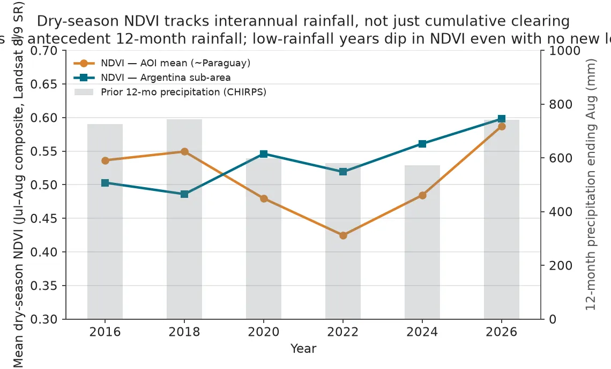
Figura 4 · informe Planet
NDVI medio de estación seca vs. lluvia antecedente de
12 meses (CHIRPS). Los años 2020, 2022 y 2024 muestran
señales particularmente claras: cuando la precipitación
disminuye, el NDVI puede caer incluso si la estructura
forestal permanece.
Figura 5 · informe Planet
BSI (suelo expuesto) AOI vs. Argentina. El BSI aumenta
durante los años secos, indicando una mayor presencia
relativa de suelo expuesto; aun así, la red de cortinas
forestales retiene oscuridad incluso en celdas 70 %
desmontadas.
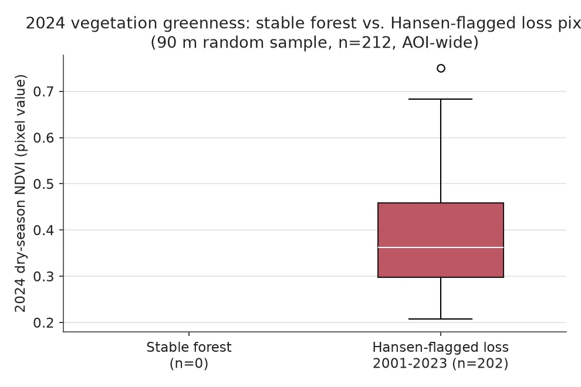
Figura 7 · informe Planet
NDVI 2024: bosque estable vs. píxeles con pérdida Hansen
(muestra aleatoria, n = 212). Lo marcado como pérdida es
efectivamente no-bosque en 2024.
Figura 8 · informe Planet
Años desde el desmonte vs. verdor 2024. En una muestra de
202 píxeles, la correlación fue de aproximadamente
r = −0,03. No aparece una relación lineal clara entre la
antigüedad del desmonte y el verdor observado. Esto no
demuestra que ninguna superficie pueda regenerarse: dentro
de los píxeles y el período analizados, no aparece una
señal estadística clara de recuperación de la cobertura
original.
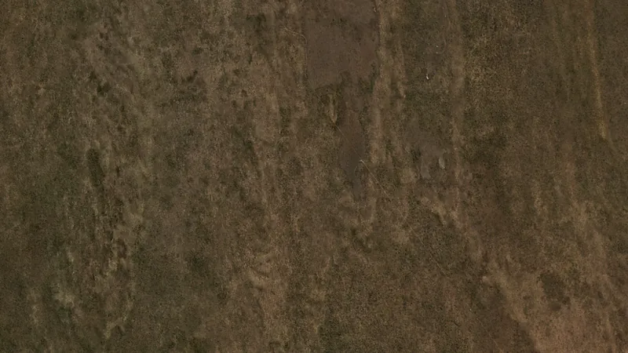
Control · Defensores del Chaco — ago 2017
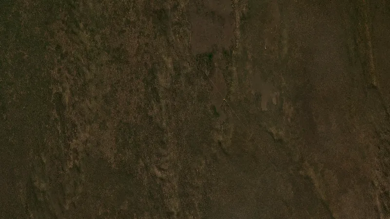
Control · mismo sitio — ago 2024 · pérdida acumulada 0,075 %
Argentina · llanura del Bermejo — ago 2017
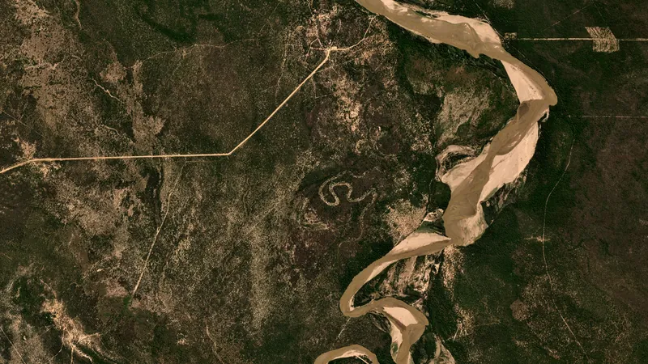
Argentina · mismo sitio — ago 2024
Una celda puede engañar. El informe utiliza
celdas de 0,25 grados para estudiar la distribución de la pérdida.
Dentro de una celda de unos 27 km de lado pueden coexistir
superficies altamente transformadas y grandes bloques de bosque,
y una cifra agregada para una celda no puede interpretarse como
si describiera cada punto dentro de ella. Una celda ubicada en el
norte de Alto Paraguay (19,525° S · 58,925° O) aparece con
aproximadamente 60 % de pérdida en Hansen; sin embargo, tres
verificaciones con imágenes PlanetScope de 2017, 2024 y 2026
muestran cobertura aparentemente continua en los puntos
inspeccionados. Puede deberse a una clasificación incorrecta
sobre humedales estacionales, a que la pérdida se encuentra en
otra parte de la celda o a que las verificaciones no capturaron
el área problemática. Una estadística espacial es una señal para
investigar, no necesariamente una prueba por sí misma.
Y un control dentro de un área protegida funciona como
referencia: en un sitio cercano al Parque Nacional
Defensores del Chaco, las imágenes de 2017 y 2024 muestran un
dosel continuo y no presentan una transformación comparable a la
observada en los focos anteriores. La pérdida acumulada
registrada en el punto de control es aproximadamente 0,075 %. No
basta con observar una zona donde el bosque desaparece; también
es útil observar lugares donde permanece para comprobar si los
indicadores utilizados responden de manera diferente.
Placa 11 · Gobernanza y lo que queda en juegoSíntesis de literatura citada · §11–§12 del informe
Una ley que protege, una máquina que no alcanza
Los datos satelitales muestran dónde y cuándo cambia la
cobertura: no explican por sí solos las instituciones que
permiten, regulan o dificultan esos cambios. En Paraguay existe
una diferencia normativa importante entre la Región Oriental y
el Chaco. La Ley 2524/04 establece
restricciones para nuevos cambios de uso de suelo en la Región
Oriental; en el Chaco se aplica otro régimen, asociado entre
otras normas a la Ley 422/73. Para
determinadas propiedades, la normativa establece la
conservación de una proporción de vegetación nativa y permite el
cambio de uso de parte de la superficie mediante los
procedimientos correspondientes.
La existencia de una autorización, sin embargo, no significa que
toda transformación observada sea necesariamente legal. Del
mismo modo, una alerta satelital no demuestra por sí sola una
infracción. Datos citados por Earthsight a partir de
información del INFONA estimaron que entre agosto de 2017 y
agosto de 2018 se desmontaron unas 255.000 hectáreas en el
Chaco: aproximadamente 194.000 contaban con autorización,
mientras que unas 61.000 fueron clasificadas como
posiblemente ilegales. La palabra “posiblemente” es
importante. Una alerta o una comparación satelital puede
identificar un cambio; establecer su legalidad requiere
información administrativa y jurídica adicional.
Hay otra dimensión que no aparece directamente en un mapa de
pérdida forestal. Parte del territorio analizado se encuentra
relacionado con el territorio de los
Ayoreo-Totobiegosode, incluido el área donde
organizaciones especializadas documentan la presencia de
personas en aislamiento voluntario, y esas mismas
organizaciones han documentado conflictos territoriales y
avance de actividades agropecuarias. El atlas no verifica la
titularidad de las parcelas ni determina la legalidad de las
operaciones mencionadas: esa información pertenece a otra capa
de investigación y requiere fuentes documentales específicas.
El dato satelital y el dato territorial pueden relacionarse,
pero no son intercambiables.
Hallazgos principales del informe
La pérdida es extensa y no es homogénea. La serie 2001–2025 muestra una pérdida extensa de cobertura arbórea en el Chaco paraguayo, particularmente en Boquerón y Alto Paraguay. La intensidad relativa varía entre departamentos y dentro de cada departamento: algunas áreas concentran pérdidas muy superiores al promedio, mientras que otras mantienen una cobertura considerablemente más estable.
Hay concentración espacial y más fragmentación. El análisis complementario apunta a una concentración espacial de los focos y a una mayor fragmentación del bosque restante. Alrededor de áreas protegidas como Defensores del Chaco y Médanos del Chaco, las pérdidas observadas son mucho menores: menos del 3 % en el núcleo protegido. En el área de interés del informe, el 32,7 % del bosque del año 2000 estaba perdido al 2023 (46.282 km²) y ningún año de la serie revirtió la tendencia.
Es, en los hechos, un caso paraguayo. El 98,1 % del área analizada está en Paraguay. Las franjas de Bolivia, Brasil y Argentina pesan entre 0,3 % y 1,1 % del total: sirven como control, no como comparación entre países.
El verdor cae por sequía antes que por desmonte. Los índices espectrales muestran que las condiciones climáticas pueden modificar fuertemente la apariencia de la vegetación de un año a otro. Los valles de NDVI/NBR/BSI de 2020, 2022 y 2024 siguen la señal de lluvia del CHIRPS: leerlos como deforestación nueva es un error de interpretación.
El bosque convertido no vuelve. La correlación entre los años transcurridos desde el desmonte y el verdor de 2024 es r = −0,03, indistinguible de cero: dentro de la ventana analizada no aparece una señal estadística clara de recuperación de la cobertura original.
Cada fuente responde una pregunta diferente. Hansen permite reconstruir la pérdida anual a gran escala; Landsat ayuda a observar cambios en la condición de la vegetación; CHIRPS permite incorporar la precipitación; PlanetScope permite inspeccionar determinados lugares con mayor resolución. Los registros administrativos y la legislación aportan información que los satélites no pueden proporcionar.
Lo que el informe no puede sostener. Es un análisis automático: sus cifras se contrastan contra las fuentes, pero sus lecturas de imágenes y sus conclusiones por celda son interpretación, y su conteo de pérdida termina en 2023.
Una última precaución. Los resultados presentados
aquí no constituyen una medición causal de la deforestación. Las
correlaciones entre precipitación, índices espectrales y pérdida
forestal describen asociaciones: no permiten determinar por sí
solas qué factor produjo cada cambio. Del mismo modo, la
concentración espacial de pérdida cerca o lejos de áreas
protegidas no basta para estimar el efecto causal de la
protección. Y una celda con un porcentaje elevado de pérdida no
garantiza que toda su superficie haya sufrido el mismo proceso.
El valor de este atlas está en combinar escalas: país,
departamento, celda, píxel y escena satelital. El bosque que
aparece en una imagen no es solamente una superficie verde: es una
serie temporal, una distribución espacial y una medición
condicionada por una definición. Leer correctamente esa medición
es tan importante como mostrarla.
Referencias del informe
Guyra Paraguay / IUCN NL — Monitoreo satelital de alertas de deforestación en el Chaco · NASA Earth Observatory — iucn.nl / science.nasa.gov
Earthsight — Casi un cuarto de la deforestación del Chaco posiblemente ilegal (INFONA); decreto 7702; Ley 422/73 y 2524/04 · earthsight.org.uk
ScienceDirect — Impacto de los gobiernos nacionales en la pérdida de cobertura forestal del Chaco paraguayo, 1999–2021 · sciencedirect.com
IWGIA — Los Ayoreo, el último pueblo aislado fuera del Amazonas (~800 ha/día; medidas cautelares CIDH 2016) · iwgia.org
Earthsight — El último refugio: defensa de los Ayoreo Totobiegosode (cinco operaciones agropecuarias) · earthsight.org.uk
Mongabay — Los Ayoreo no contactados podrían enfrentar riesgos sanitarios mientras el Gran Chaco se reduce (pérdida > 45.000 km² 2001–2019) · news.mongabay.com
ScienceDirect — "La ley es una telaraña": deforestación ilegal en el Chaco seco argentino tras la Ley de Bosques (722.782 ha 2008–2017) · sciencedirect.com
Mongabay Latam — Cómo se eludió la Ley de Bosques en la provincia de Chaco, Argentina (500.000 ha por reclasificación 2009–2024) · mongabay-latam.lamula.pe